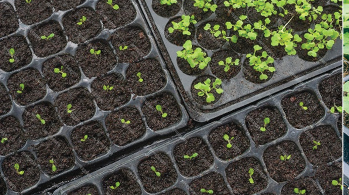
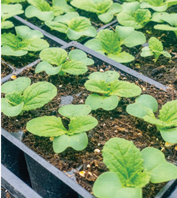

Seedlings are moved from the soil nurseries or seedling trays to a permanent seedbed when they are 3 - 4 weeks old, about 6 - 10 cm tall and have 4 true leaves. Before moving, seedlings should be hardened off. This is done by reducing watering and shade at the nursery a few days before taking them to the main field. Seedlings should be planted 25 - 35 cm apart in a row and 30 - 40 cm apart between rows. To help with this, use a long, straight wooden pole or marked rope to mark the spaces. It is advisable to transplant seedlings when the weather is cool. This helps to reduce transplanting shock. Also, water the plants a little bit, but not too much after transplanting. Too much water can cause diseases such as damping off and root rot.
Management of water
Under normal conditions, you need to water the crop plants about 2 to 3 days per week. But you need to think about the soil type, weather situations, and the plant’s age. You can use drip, sprinkler, watering can or furrow methods to water the plants.
Management of nutrients
For the crop to grow well, nitrogenous fertilisers, for example, CAN should be used at least three times. The first application should be two weeks after the plants are in the field. The other two applications should be two weeks apart. For each plant, one tablespoon of fertiliser is enough.
Management of weeds
You should keep the fields free from weeds throughout the growing season. We use different methods to manage weeds. These include applying mulch, pulling weeds by hand, and hoeing by hand. It is advisable to manage weeds early when they are small and easy to pull out. This is before the plant canopy, or the top part of the plant shades the space between the plants. As the plants grow, they cover the space between them. This covering stops weeds from growing. It is recommended